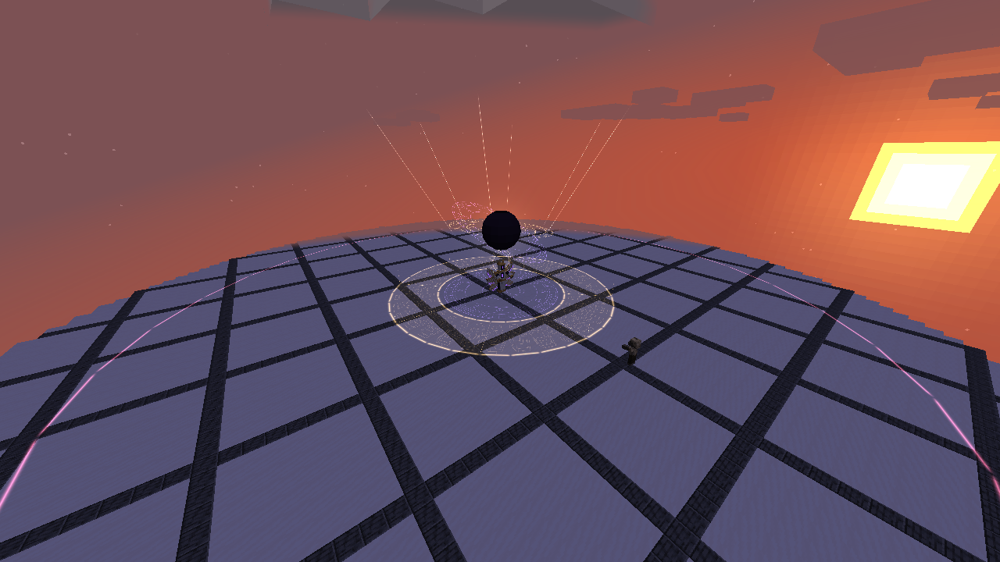

Moira, Lord of Finality belongs to Ananke. It cannot be rolled, synthesized or equipped by players. Listed values are before defenses and other modifiers.
| Ability | Damage type / raw damage | Cost | Cooldown |
|---|---|---|---|
| Fatebreaker | Aura slash · 1,800 | 4,000 magicules | 4 seconds |
| Starfall Canticle | Light elemental · 1,000 per star | 10,000 magicules | 10 seconds |
| Eventide Procession | Darkness elemental · 2,200 once per victim | 14,000 magicules | 12 seconds |
| The Last Dawn | Space elemental · 4,800 | 50,000 magicules | 24 seconds |
Fatebreaker
Warning: 24 ticks / 1.2 seconds.
Locks a 110° horizontal fan toward the target at the cast's origin. After the warning, enemies within 16 blocks and less than five vertical blocks from the origin are struck once. Gold border beams and a rose-violet floor wedge identify the footprint. Step around the fan or leave its radius; its facing does not chase you during preparation.
Starfall Canticle
Warning: 28 ticks / 1.4 seconds per star.
Creates six starfall markers, increasing to eight from phase two. New warnings appear 12 ticks / 0.6 seconds apart, around the target's current position. Each marker locks when it appears and strikes a three-block-radius sphere 28 ticks later. The first marker centers on the original target; later markers have small fixed scatter. Move out of each seal before its stellar lance descends. Previously placed seals never slide after you.
Eventide Procession
Warning: 30 ticks / 1.5 seconds.
After preparation, a hollow circular front starts at radius three and advances 0.55 blocks per tick for 40 ticks, ending around radius 24.5. Enemies within 1.2 blocks of the moving front and within three vertical blocks of the cast origin are hit once. The interior is safe from this rite after the front passes. A violet scripture wall with a gold crest marks its motion; it is not a filled area of damage.
The Last Dawn
Warning: 75 ticks / 3.75 seconds.
Available to Ananke's final phase. Opposed celestial seals gather a dark sun above the cast origin. The blast strikes once throughout a 32-block sphere, except a safe annulus 7–12 horizontal blocks from the origin. Stand between the two gold circles or leave the sphere. The gold lattice remains visible through the impact. This refuge only excludes The Last Dawn's hit; other attacks can still reach it.
Pictures and video
